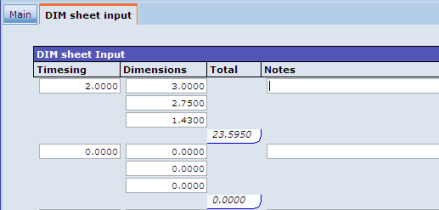
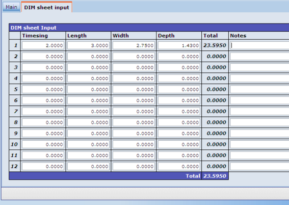

DIM Sheets
Dim (dimension) sheets allow the estimator/surveyor to build up the quantities for a item from the basic dimensions. For example, if an item is for digging a trench, the volume of material excavated would be based on the depth, width and length of the trench. Dim sheets work like a spreadsheet; the total quantity calculated on the sheet is returned to the Quantity field. The dim sheet lines are saved with the item record. If you open an existing dim sheet where lines have been entered, these lines are displayed.
Two views are available:
- The 'Traditional' option mirrors the method used for recording a DIM sheet on paper sheets. The length, width and depth dimensions are stacked vertically in a single column.
Figure 1: Traditional Style DIM Sheet
- The 'Modern' method uses a browse style approach. The length, width and depth dimensions are separate columns.
Figure 2: Modern Style DIM Sheet
To use a DIM sheet to calculate the quantity of an item:
- While maintaining the item, the DIM Sheet box.
displays the DIM Sheet tab.
- For each line on the DIM Sheet tab:
- In the Timesing field, enter the number to multiply the line calculation by (the number of items with these dimensions).
- In the Length, Width and Depth fields, enter the dimensions.
The fields available depend on the unit of quantity for the resource.
- updates the Quantity field (on the Main tab) as you enter new figures.
- Click
 to save the item (not just the DIM sheet calculation).
to save the item (not just the DIM sheet calculation).